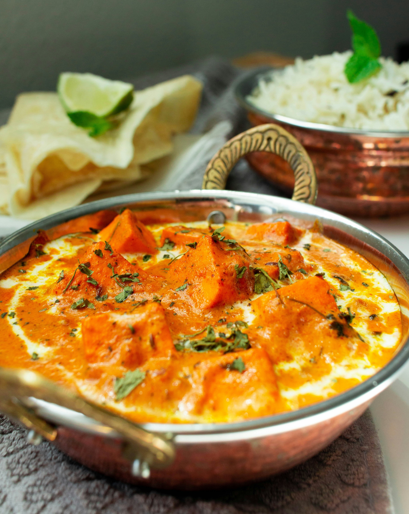

Mughlai Shahi Paneer Recipe

Ingredients:
- Paneer
- Butter
- Oil
- Ghee
- Spices - Cumin, Cardamom, Cinnamon, Cloves, Black pepper, Bay Leaf, Green chillies
- Ground spices - Kashmiri red chilli powder, Coriander powder, Turmeric powder
- Onions
- Tomatoes
- Cashews
- Cream
- Sugar
- Kasuri Methi (Dried Fenugreek)
Steps:
- Saute cumin, whole spices and green chillies in hot oil in a pan for a minute or two till fragrant.
The cumin should start spluttering
- Add onions and ginger garlic paste and saute for 2-3 minutes
- Add tomatoes, cashew nuts and water and simmer covered for 7-8 minutes
- Remove the bayleaf and cardamom, and let this mixture cool completely
- Once the mixture is completely cool, pour this into a blender, mixer grinder or food processor
- Blend till smooth
- Heat ghee and butter in a pan and add sugar. Cook the sugar till it starts to caramelise and turns light golden brown
- Add ground spices and saute on low for a minute. Be careful not to burn the spices.
You can add a splash of water to cool the pan slightly so the spices cook but don’t burn
- Pour the onion, tomato and cashew mixture into the pan
- Simmer covered for 10 minutes till you see some oil floating to the top
- Add paneer and simmer for 2-3 minutes. Don’t overcook the paneer or it’ll start to get rubbery
- Add roasted kasuri methi and cream and mix well. Turn off the flame, top with fresh coriander and another dash of cream and serve hot